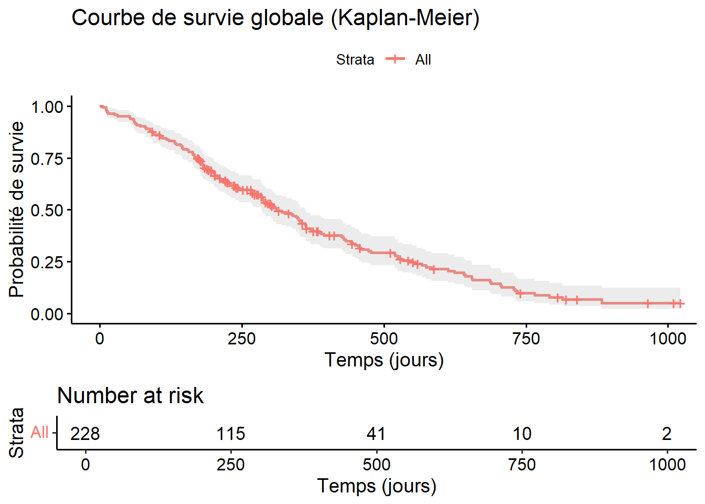
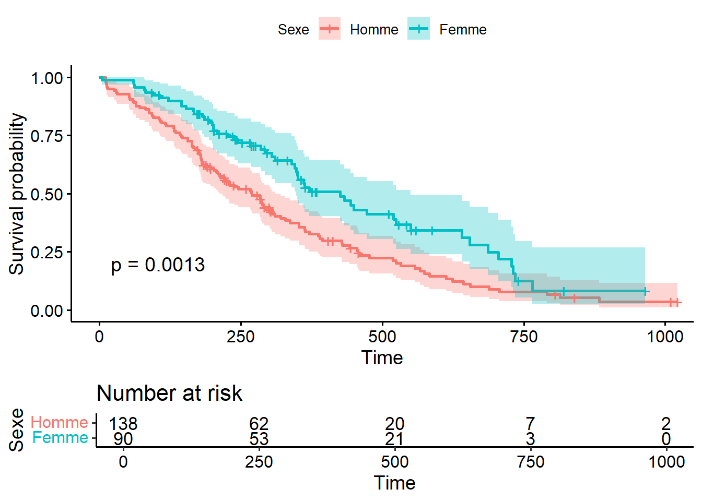

surv_obj <- Surv(time = lung$time, event = lung$status)
surv_obj[1:10] [1] 306 455 1010+ 210 883 1022+ 310 361 218 166 # Chargement des librairies library(survival) library(survminer)
[1] 306 455 1010+ 210 883 1022+ 310 361 218 166 km_fit <- survfit(surv_obj ~ 1, data = lung)
ggsurvplot(
km_fit,
conf.int = TRUE,
risk.table = TRUE,
title = "Courbe de survie globale (Kaplan-Meier)",
xlab = "Temps (jours)",
ylab = "Probabilité de survie"
)
km_fit_group <- survfit(surv_obj ~ sex, data = lung)
ggsurvplot(
km_fit_group,
data = lung,
pval = TRUE,
conf.int = TRUE,
risk.table = TRUE,
legend.title = "Sexe",
legend.labs = c("Homme", "Femme")
)
Call:
coxph(formula = surv_obj ~ age + sex, data = lung)
n= 228, number of events= 165
coef exp(coef) se(coef) z Pr(>|z|)
age 0.017045 1.017191 0.009223 1.848 0.06459 .
sex -0.513219 0.598566 0.167458 -3.065 0.00218 **
---
Signif. codes: 0 '***' 0.001 '**' 0.01 '*' 0.05 '.' 0.1 ' ' 1
exp(coef) exp(-coef) lower .95 upper .95
age 1.0172 0.9831 0.9990 1.0357
sex 0.5986 1.6707 0.4311 0.8311
Concordance= 0.603 (se = 0.025 )
Likelihood ratio test= 14.12 on 2 df, p=9e-04
Wald test = 13.47 on 2 df, p=0.001
Score (logrank) test = 13.72 on 2 df, p=0.001The exercice in this section is to calculate the minimal sample size to achieve at least 80% of statistical power and 5% of alpha
The first group has a survival median of 9 months and the second group has a median of 13 monthsbased on litterature. How many patient do we need t osee a siguinifcant difference of suvival between the two groups
library(rpact)
library(tidyverse)
library(gsDesign)
library(gt)
get_number <- function (x, element) {
x[[element]]
}
sampleSize_rpact <- getSampleSizeSurvival(accrualTime = 8, followUpTime = 10,
sided = 1, alpha = 0.05, beta = 0.2,
median1 = 9, median2 = 14.5,
)
kable(sampleSize_rpact)Design plan parameters and output for survival data
Design parameters
User defined parameters
Default parameters
Sample size and output
Legend
probEvent_rpact <- getEventProbabilities(lambda1 = log(2)/9, lambda2 = log(2)/14.5,
time =18,
accrualTime = 8,
maxNumberOfSubjects = 191
)
kable(probEvent_rpact)Event probabilities at given time
User defined parameters
Default parameters
Time and output
Legend
n_event_rpact <- probEvent_rpact$cumulativeEventProbabilities * 191
design_rpact <- getDesignGroupSequential(kMax = 1,
sided = 1, alpha = 0.05,
typeOfDesign = "asOF"
)
powerResult_rpact <- getPowerSurvival(
design = design_rpact, median1 = 9, median2 = 14.5,
accrualTime = 8,
maxNumberOfSubjects = 191, maxNumberOfEvents = n_event_rpact
)
kable(powerResult_rpact)Design plan parameters and output for survival data
Design parameters
User defined parameters
Default parameters
Power and output
Legend
r <- 1 # Experimental/control randomization ratio
alpha <- 0.05 # 1-sided Type I error
beta <- 0.2 # Type II error (1 - power)
hr <- 14.5/9 # Hazard ratio (experimental / control)
controlMedian <- 9
dropoutRate <- 0 # Exponential dropout rate per time unit
enrollDuration <- 8
minfup <- 10 # Minimum follow-up
Nlf <- nSurvival(sided = 1,
lambda1 = log(2) / 9, lambda2 = log(2) / 14.5,
eta = dropoutRate,
Tr = enrollDuration,
Ts = 18,
ratio = r,
alpha = alpha,
beta = beta
)
cat(paste("Sample size: ", ceiling(Nlf$n), "Events: ", ceiling(Nlf$nEvents), "\n"))Sample size: 191 Events: 109 table_n <- expand_grid(alpha = c(0.025, 0.05, 0.10, 0.15, 0.20),
power = c(0.60, 0.65, 0.70, 0.75, 0.80, 0.85, 0.90, 0.95),
median1 = 5.6,
median2 = c(7.6, 8.6, 9.1)) %>%
mutate(object_rpact = pmap(list(alpha = alpha,
beta = 1 - power,
median1 = median1,
median2 = median2),
getSampleSizeSurvival,
followUpTime = 6,
accrualTime = 18)) %>%
mutate(total_subject = map_dbl(object_rpact, get_number, element = "numberOfSubjects")) %>%
mutate(n1_subject = map_dbl(object_rpact, get_number, element = "numberOfSubjects1")) %>%
mutate(n2_subject = map_dbl(object_rpact, get_number, element = "numberOfSubjects2")) %>%
mutate(hazardratio = map_dbl(object_rpact, get_number, element = "hazardRatio")) %>%
mutate(event_h1 = map_dbl(object_rpact, get_number, element = "expectedEventsH1")) %>%
mutate(across(c(total_subject, n1_subject, n2_subject), ceiling)) %>%
mutate(across(c(alpha, power, hazardratio), ~ round(.x, digits = 3))) %>%
mutate(across(c(event_h1), ~ round(.x, digits = 1))) %>%
mutate(followUpTime = 6, accrualTime = 18) %>%
mutate(total_study = followUpTime + accrualTime) %>%
arrange(alpha, power, n1_subject, n2_subject, total_subject, median2) %>%
mutate(scenario = row_number()) %>%
select(scenario, power, alpha, n1_subject, n2_subject, total_subject, event_h1,
hazardratio, median1, median2, accrualTime, total_study) %>%
rename(Scenario = scenario, Power = power, Alpha = alpha,
`Number of Events` = event_h1,
`Control # Patients` = n1_subject, `Experimental # Patients` = n2_subject,
`Total # patients` = total_subject, `Hazard Ratio (HR)` = hazardratio,
`Control MedSurv Time` = median1, `Experimental MedSurv Time` = median2,
`Enrolment Time (months)` = accrualTime, `Total Study Time (months)` = total_study)
table_n %>%
# select(-c(object_rpact, hazard, thetah0)) %>%
gt() |>
tab_header(title = "Tables with new inputs")| Tables with new inputs | |||||||||||
|---|---|---|---|---|---|---|---|---|---|---|---|
| Scenario | Power | Alpha | Control # Patients | Experimental # Patients | Total # patients | Number of Events | Hazard Ratio (HR) | Control MedSurv Time | Experimental MedSurv Time | Enrolment Time (months) | Total Study Time (months) |
| 1 | 0.60 | 0.025 | 57 | 57 | 114 | 83.1 | 1.625 | 5.6 | 9.1 | 18 | 24 |
| 2 | 0.60 | 0.025 | 72 | 72 | 144 | 106.5 | 1.536 | 5.6 | 8.6 | 18 | 24 |
| 3 | 0.60 | 0.025 | 138 | 138 | 276 | 210.1 | 1.357 | 5.6 | 7.6 | 18 | 24 |
| 4 | 0.65 | 0.025 | 64 | 64 | 128 | 93.3 | 1.625 | 5.6 | 9.1 | 18 | 24 |
| 5 | 0.65 | 0.025 | 81 | 81 | 162 | 119.5 | 1.536 | 5.6 | 8.6 | 18 | 24 |
| 6 | 0.65 | 0.025 | 155 | 155 | 310 | 235.9 | 1.357 | 5.6 | 7.6 | 18 | 24 |
| 7 | 0.70 | 0.025 | 72 | 72 | 143 | 104.7 | 1.625 | 5.6 | 9.1 | 18 | 24 |
| 8 | 0.70 | 0.025 | 91 | 91 | 181 | 134.1 | 1.536 | 5.6 | 8.6 | 18 | 24 |
| 9 | 0.70 | 0.025 | 174 | 174 | 348 | 264.7 | 1.357 | 5.6 | 7.6 | 18 | 24 |
| 10 | 0.75 | 0.025 | 81 | 81 | 161 | 117.8 | 1.625 | 5.6 | 9.1 | 18 | 24 |
| 11 | 0.75 | 0.025 | 102 | 102 | 204 | 150.8 | 1.536 | 5.6 | 8.6 | 18 | 24 |
| 12 | 0.75 | 0.025 | 196 | 196 | 391 | 297.7 | 1.357 | 5.6 | 7.6 | 18 | 24 |
| 13 | 0.80 | 0.025 | 91 | 91 | 182 | 133.2 | 1.625 | 5.6 | 9.1 | 18 | 24 |
| 14 | 0.80 | 0.025 | 115 | 115 | 230 | 170.6 | 1.536 | 5.6 | 8.6 | 18 | 24 |
| 15 | 0.80 | 0.025 | 221 | 221 | 442 | 336.7 | 1.357 | 5.6 | 7.6 | 18 | 24 |
| 16 | 0.85 | 0.025 | 105 | 105 | 209 | 152.4 | 1.625 | 5.6 | 9.1 | 18 | 24 |
| 17 | 0.85 | 0.025 | 132 | 132 | 263 | 195.1 | 1.536 | 5.6 | 8.6 | 18 | 24 |
| 18 | 0.85 | 0.025 | 253 | 253 | 505 | 385.1 | 1.357 | 5.6 | 7.6 | 18 | 24 |
| 19 | 0.90 | 0.025 | 122 | 122 | 244 | 178.3 | 1.625 | 5.6 | 9.1 | 18 | 24 |
| 20 | 0.90 | 0.025 | 154 | 154 | 308 | 228.4 | 1.536 | 5.6 | 8.6 | 18 | 24 |
| 21 | 0.90 | 0.025 | 296 | 296 | 591 | 450.7 | 1.357 | 5.6 | 7.6 | 18 | 24 |
| 22 | 0.95 | 0.025 | 151 | 151 | 302 | 220.5 | 1.625 | 5.6 | 9.1 | 18 | 24 |
| 23 | 0.95 | 0.025 | 191 | 191 | 381 | 282.4 | 1.536 | 5.6 | 8.6 | 18 | 24 |
| 24 | 0.95 | 0.025 | 366 | 366 | 731 | 557.4 | 1.357 | 5.6 | 7.6 | 18 | 24 |
| 25 | 0.60 | 0.050 | 42 | 42 | 84 | 61.1 | 1.625 | 5.6 | 9.1 | 18 | 24 |
| 26 | 0.60 | 0.050 | 53 | 53 | 106 | 78.3 | 1.536 | 5.6 | 8.6 | 18 | 24 |
| 27 | 0.60 | 0.050 | 102 | 102 | 203 | 154.5 | 1.357 | 5.6 | 7.6 | 18 | 24 |
| 28 | 0.65 | 0.050 | 48 | 48 | 96 | 69.9 | 1.625 | 5.6 | 9.1 | 18 | 24 |
| 29 | 0.65 | 0.050 | 61 | 61 | 121 | 89.6 | 1.536 | 5.6 | 8.6 | 18 | 24 |
| 30 | 0.65 | 0.050 | 116 | 116 | 232 | 176.8 | 1.357 | 5.6 | 7.6 | 18 | 24 |
| 31 | 0.70 | 0.050 | 55 | 55 | 110 | 79.9 | 1.625 | 5.6 | 9.1 | 18 | 24 |
| 32 | 0.70 | 0.050 | 69 | 69 | 138 | 102.3 | 1.536 | 5.6 | 8.6 | 18 | 24 |
| 33 | 0.70 | 0.050 | 133 | 133 | 265 | 201.8 | 1.357 | 5.6 | 7.6 | 18 | 24 |
| 34 | 0.75 | 0.050 | 63 | 63 | 125 | 91.3 | 1.625 | 5.6 | 9.1 | 18 | 24 |
| 35 | 0.75 | 0.050 | 79 | 79 | 158 | 116.9 | 1.536 | 5.6 | 8.6 | 18 | 24 |
| 36 | 0.75 | 0.050 | 152 | 152 | 303 | 230.7 | 1.357 | 5.6 | 7.6 | 18 | 24 |
| 37 | 0.80 | 0.050 | 72 | 72 | 144 | 104.9 | 1.625 | 5.6 | 9.1 | 18 | 24 |
| 38 | 0.80 | 0.050 | 91 | 91 | 182 | 134.4 | 1.536 | 5.6 | 8.6 | 18 | 24 |
| 39 | 0.80 | 0.050 | 174 | 174 | 348 | 265.2 | 1.357 | 5.6 | 7.6 | 18 | 24 |
| 40 | 0.85 | 0.050 | 84 | 84 | 167 | 122.0 | 1.625 | 5.6 | 9.1 | 18 | 24 |
| 41 | 0.85 | 0.050 | 106 | 106 | 211 | 156.3 | 1.536 | 5.6 | 8.6 | 18 | 24 |
| 42 | 0.85 | 0.050 | 203 | 203 | 405 | 308.4 | 1.357 | 5.6 | 7.6 | 18 | 24 |
| 43 | 0.90 | 0.050 | 100 | 100 | 199 | 145.3 | 1.625 | 5.6 | 9.1 | 18 | 24 |
| 44 | 0.90 | 0.050 | 126 | 126 | 251 | 186.1 | 1.536 | 5.6 | 8.6 | 18 | 24 |
| 45 | 0.90 | 0.050 | 241 | 241 | 482 | 367.3 | 1.357 | 5.6 | 7.6 | 18 | 24 |
| 46 | 0.95 | 0.050 | 126 | 126 | 251 | 183.6 | 1.625 | 5.6 | 9.1 | 18 | 24 |
| 47 | 0.95 | 0.050 | 159 | 159 | 317 | 235.2 | 1.536 | 5.6 | 8.6 | 18 | 24 |
| 48 | 0.95 | 0.050 | 305 | 305 | 609 | 464.2 | 1.357 | 5.6 | 7.6 | 18 | 24 |
| 49 | 0.60 | 0.100 | 28 | 28 | 55 | 40.0 | 1.625 | 5.6 | 9.1 | 18 | 24 |
| 50 | 0.60 | 0.100 | 35 | 35 | 70 | 51.2 | 1.536 | 5.6 | 8.6 | 18 | 24 |
| 51 | 0.60 | 0.100 | 67 | 67 | 133 | 101.0 | 1.357 | 5.6 | 7.6 | 18 | 24 |
| 52 | 0.65 | 0.100 | 33 | 33 | 65 | 47.1 | 1.625 | 5.6 | 9.1 | 18 | 24 |
| 53 | 0.65 | 0.100 | 41 | 41 | 82 | 60.4 | 1.536 | 5.6 | 8.6 | 18 | 24 |
| 54 | 0.65 | 0.100 | 79 | 79 | 157 | 119.2 | 1.357 | 5.6 | 7.6 | 18 | 24 |
| 55 | 0.70 | 0.100 | 38 | 38 | 76 | 55.3 | 1.625 | 5.6 | 9.1 | 18 | 24 |
| 56 | 0.70 | 0.100 | 48 | 48 | 96 | 70.9 | 1.536 | 5.6 | 8.6 | 18 | 24 |
| 57 | 0.70 | 0.100 | 92 | 92 | 184 | 139.9 | 1.357 | 5.6 | 7.6 | 18 | 24 |
| 58 | 0.75 | 0.100 | 45 | 45 | 89 | 64.9 | 1.625 | 5.6 | 9.1 | 18 | 24 |
| 59 | 0.75 | 0.100 | 57 | 57 | 113 | 83.2 | 1.536 | 5.6 | 8.6 | 18 | 24 |
| 60 | 0.75 | 0.100 | 108 | 108 | 216 | 164.1 | 1.357 | 5.6 | 7.6 | 18 | 24 |
| 61 | 0.80 | 0.100 | 53 | 53 | 105 | 76.5 | 1.625 | 5.6 | 9.1 | 18 | 24 |
| 62 | 0.80 | 0.100 | 67 | 67 | 133 | 98.0 | 1.536 | 5.6 | 8.6 | 18 | 24 |
| 63 | 0.80 | 0.100 | 127 | 127 | 254 | 193.4 | 1.357 | 5.6 | 7.6 | 18 | 24 |
| 64 | 0.85 | 0.100 | 63 | 63 | 125 | 91.2 | 1.625 | 5.6 | 9.1 | 18 | 24 |
| 65 | 0.85 | 0.100 | 79 | 79 | 158 | 116.8 | 1.536 | 5.6 | 8.6 | 18 | 24 |
| 66 | 0.85 | 0.100 | 152 | 152 | 303 | 230.5 | 1.357 | 5.6 | 7.6 | 18 | 24 |
| 67 | 0.90 | 0.100 | 77 | 77 | 153 | 111.5 | 1.625 | 5.6 | 9.1 | 18 | 24 |
| 68 | 0.90 | 0.100 | 97 | 97 | 193 | 142.8 | 1.536 | 5.6 | 8.6 | 18 | 24 |
| 69 | 0.90 | 0.100 | 185 | 185 | 370 | 281.8 | 1.357 | 5.6 | 7.6 | 18 | 24 |
| 70 | 0.95 | 0.100 | 100 | 100 | 199 | 145.3 | 1.625 | 5.6 | 9.1 | 18 | 24 |
| 71 | 0.95 | 0.100 | 126 | 126 | 251 | 186.1 | 1.536 | 5.6 | 8.6 | 18 | 24 |
| 72 | 0.95 | 0.100 | 241 | 241 | 482 | 367.3 | 1.357 | 5.6 | 7.6 | 18 | 24 |
| 73 | 0.60 | 0.150 | 20 | 20 | 39 | 28.2 | 1.625 | 5.6 | 9.1 | 18 | 24 |
| 74 | 0.60 | 0.150 | 25 | 25 | 49 | 36.2 | 1.536 | 5.6 | 8.6 | 18 | 24 |
| 75 | 0.60 | 0.150 | 47 | 47 | 94 | 71.4 | 1.357 | 5.6 | 7.6 | 18 | 24 |
| 76 | 0.65 | 0.150 | 24 | 24 | 47 | 34.3 | 1.625 | 5.6 | 9.1 | 18 | 24 |
| 77 | 0.65 | 0.150 | 30 | 30 | 60 | 43.9 | 1.536 | 5.6 | 8.6 | 18 | 24 |
| 78 | 0.65 | 0.150 | 57 | 57 | 114 | 86.7 | 1.357 | 5.6 | 7.6 | 18 | 24 |
| 79 | 0.70 | 0.150 | 29 | 29 | 57 | 41.3 | 1.625 | 5.6 | 9.1 | 18 | 24 |
| 80 | 0.70 | 0.150 | 36 | 36 | 72 | 53.0 | 1.536 | 5.6 | 8.6 | 18 | 24 |
| 81 | 0.70 | 0.150 | 69 | 69 | 138 | 104.5 | 1.357 | 5.6 | 7.6 | 18 | 24 |
| 82 | 0.75 | 0.150 | 34 | 34 | 68 | 49.7 | 1.625 | 5.6 | 9.1 | 18 | 24 |
| 83 | 0.75 | 0.150 | 43 | 43 | 86 | 63.6 | 1.536 | 5.6 | 8.6 | 18 | 24 |
| 84 | 0.75 | 0.150 | 83 | 83 | 165 | 125.6 | 1.357 | 5.6 | 7.6 | 18 | 24 |
| 85 | 0.80 | 0.150 | 41 | 41 | 82 | 59.9 | 1.625 | 5.6 | 9.1 | 18 | 24 |
| 86 | 0.80 | 0.150 | 52 | 52 | 104 | 76.7 | 1.536 | 5.6 | 8.6 | 18 | 24 |
| 87 | 0.80 | 0.150 | 100 | 100 | 199 | 151.3 | 1.357 | 5.6 | 7.6 | 18 | 24 |
| 88 | 0.85 | 0.150 | 50 | 50 | 100 | 72.9 | 1.625 | 5.6 | 9.1 | 18 | 24 |
| 89 | 0.85 | 0.150 | 63 | 63 | 126 | 93.4 | 1.536 | 5.6 | 8.6 | 18 | 24 |
| 90 | 0.85 | 0.150 | 121 | 121 | 242 | 184.3 | 1.357 | 5.6 | 7.6 | 18 | 24 |
| 91 | 0.90 | 0.150 | 63 | 63 | 125 | 91.2 | 1.625 | 5.6 | 9.1 | 18 | 24 |
| 92 | 0.90 | 0.150 | 79 | 79 | 158 | 116.8 | 1.536 | 5.6 | 8.6 | 18 | 24 |
| 93 | 0.90 | 0.150 | 152 | 152 | 303 | 230.5 | 1.357 | 5.6 | 7.6 | 18 | 24 |
| 94 | 0.95 | 0.150 | 84 | 84 | 167 | 122.0 | 1.625 | 5.6 | 9.1 | 18 | 24 |
| 95 | 0.95 | 0.150 | 106 | 106 | 211 | 156.3 | 1.536 | 5.6 | 8.6 | 18 | 24 |
| 96 | 0.95 | 0.150 | 203 | 203 | 405 | 308.4 | 1.357 | 5.6 | 7.6 | 18 | 24 |
| 97 | 0.60 | 0.200 | 14 | 14 | 28 | 20.3 | 1.625 | 5.6 | 9.1 | 18 | 24 |
| 98 | 0.60 | 0.200 | 18 | 18 | 36 | 26.1 | 1.536 | 5.6 | 8.6 | 18 | 24 |
| 99 | 0.60 | 0.200 | 34 | 34 | 68 | 51.4 | 1.357 | 5.6 | 7.6 | 18 | 24 |
| 100 | 0.65 | 0.200 | 18 | 18 | 35 | 25.5 | 1.625 | 5.6 | 9.1 | 18 | 24 |
| 101 | 0.65 | 0.200 | 23 | 23 | 45 | 32.7 | 1.536 | 5.6 | 8.6 | 18 | 24 |
| 102 | 0.65 | 0.200 | 43 | 43 | 85 | 64.6 | 1.357 | 5.6 | 7.6 | 18 | 24 |
| 103 | 0.70 | 0.200 | 22 | 22 | 44 | 31.7 | 1.625 | 5.6 | 9.1 | 18 | 24 |
| 104 | 0.70 | 0.200 | 28 | 28 | 55 | 40.6 | 1.536 | 5.6 | 8.6 | 18 | 24 |
| 105 | 0.70 | 0.200 | 53 | 53 | 105 | 80.0 | 1.357 | 5.6 | 7.6 | 18 | 24 |
| 106 | 0.75 | 0.200 | 27 | 27 | 54 | 39.0 | 1.625 | 5.6 | 9.1 | 18 | 24 |
| 107 | 0.75 | 0.200 | 34 | 34 | 68 | 50.0 | 1.536 | 5.6 | 8.6 | 18 | 24 |
| 108 | 0.75 | 0.200 | 65 | 65 | 130 | 98.6 | 1.357 | 5.6 | 7.6 | 18 | 24 |
| 109 | 0.80 | 0.200 | 33 | 33 | 66 | 48.1 | 1.625 | 5.6 | 9.1 | 18 | 24 |
| 110 | 0.80 | 0.200 | 42 | 42 | 83 | 61.6 | 1.536 | 5.6 | 8.6 | 18 | 24 |
| 111 | 0.80 | 0.200 | 80 | 80 | 160 | 121.5 | 1.357 | 5.6 | 7.6 | 18 | 24 |
| 112 | 0.85 | 0.200 | 41 | 41 | 82 | 59.9 | 1.625 | 5.6 | 9.1 | 18 | 24 |
| 113 | 0.85 | 0.200 | 52 | 52 | 104 | 76.7 | 1.536 | 5.6 | 8.6 | 18 | 24 |
| 114 | 0.85 | 0.200 | 100 | 100 | 199 | 151.3 | 1.357 | 5.6 | 7.6 | 18 | 24 |
| 115 | 0.90 | 0.200 | 53 | 53 | 105 | 76.5 | 1.625 | 5.6 | 9.1 | 18 | 24 |
| 116 | 0.90 | 0.200 | 67 | 67 | 133 | 98.0 | 1.536 | 5.6 | 8.6 | 18 | 24 |
| 117 | 0.90 | 0.200 | 127 | 127 | 254 | 193.4 | 1.357 | 5.6 | 7.6 | 18 | 24 |
| 118 | 0.95 | 0.200 | 72 | 72 | 144 | 104.9 | 1.625 | 5.6 | 9.1 | 18 | 24 |
| 119 | 0.95 | 0.200 | 91 | 91 | 182 | 134.4 | 1.536 | 5.6 | 8.6 | 18 | 24 |
| 120 | 0.95 | 0.200 | 174 | 174 | 348 | 265.2 | 1.357 | 5.6 | 7.6 | 18 | 24 |
gt(table_n) %>%
tab_header(title = "Table 1: Sample size depending on different alpha, power and effect sizes, 24 months study duration") %>%
tab_options(column_labels.background.color = "#4A83BE",
table.font.size = 10, column_labels.font.size = 12, table.align = "center") %>%
tab_style(style = list(cell_text(style = "italic")),
locations = cells_body(columns = everything()))| Table 1: Sample size depending on different alpha, power and effect sizes, 24 months study duration | |||||||||||
|---|---|---|---|---|---|---|---|---|---|---|---|
| Scenario | Power | Alpha | Control # Patients | Experimental # Patients | Total # patients | Number of Events | Hazard Ratio (HR) | Control MedSurv Time | Experimental MedSurv Time | Enrolment Time (months) | Total Study Time (months) |
| 1 | 0.60 | 0.025 | 57 | 57 | 114 | 83.1 | 1.625 | 5.6 | 9.1 | 18 | 24 |
| 2 | 0.60 | 0.025 | 72 | 72 | 144 | 106.5 | 1.536 | 5.6 | 8.6 | 18 | 24 |
| 3 | 0.60 | 0.025 | 138 | 138 | 276 | 210.1 | 1.357 | 5.6 | 7.6 | 18 | 24 |
| 4 | 0.65 | 0.025 | 64 | 64 | 128 | 93.3 | 1.625 | 5.6 | 9.1 | 18 | 24 |
| 5 | 0.65 | 0.025 | 81 | 81 | 162 | 119.5 | 1.536 | 5.6 | 8.6 | 18 | 24 |
| 6 | 0.65 | 0.025 | 155 | 155 | 310 | 235.9 | 1.357 | 5.6 | 7.6 | 18 | 24 |
| 7 | 0.70 | 0.025 | 72 | 72 | 143 | 104.7 | 1.625 | 5.6 | 9.1 | 18 | 24 |
| 8 | 0.70 | 0.025 | 91 | 91 | 181 | 134.1 | 1.536 | 5.6 | 8.6 | 18 | 24 |
| 9 | 0.70 | 0.025 | 174 | 174 | 348 | 264.7 | 1.357 | 5.6 | 7.6 | 18 | 24 |
| 10 | 0.75 | 0.025 | 81 | 81 | 161 | 117.8 | 1.625 | 5.6 | 9.1 | 18 | 24 |
| 11 | 0.75 | 0.025 | 102 | 102 | 204 | 150.8 | 1.536 | 5.6 | 8.6 | 18 | 24 |
| 12 | 0.75 | 0.025 | 196 | 196 | 391 | 297.7 | 1.357 | 5.6 | 7.6 | 18 | 24 |
| 13 | 0.80 | 0.025 | 91 | 91 | 182 | 133.2 | 1.625 | 5.6 | 9.1 | 18 | 24 |
| 14 | 0.80 | 0.025 | 115 | 115 | 230 | 170.6 | 1.536 | 5.6 | 8.6 | 18 | 24 |
| 15 | 0.80 | 0.025 | 221 | 221 | 442 | 336.7 | 1.357 | 5.6 | 7.6 | 18 | 24 |
| 16 | 0.85 | 0.025 | 105 | 105 | 209 | 152.4 | 1.625 | 5.6 | 9.1 | 18 | 24 |
| 17 | 0.85 | 0.025 | 132 | 132 | 263 | 195.1 | 1.536 | 5.6 | 8.6 | 18 | 24 |
| 18 | 0.85 | 0.025 | 253 | 253 | 505 | 385.1 | 1.357 | 5.6 | 7.6 | 18 | 24 |
| 19 | 0.90 | 0.025 | 122 | 122 | 244 | 178.3 | 1.625 | 5.6 | 9.1 | 18 | 24 |
| 20 | 0.90 | 0.025 | 154 | 154 | 308 | 228.4 | 1.536 | 5.6 | 8.6 | 18 | 24 |
| 21 | 0.90 | 0.025 | 296 | 296 | 591 | 450.7 | 1.357 | 5.6 | 7.6 | 18 | 24 |
| 22 | 0.95 | 0.025 | 151 | 151 | 302 | 220.5 | 1.625 | 5.6 | 9.1 | 18 | 24 |
| 23 | 0.95 | 0.025 | 191 | 191 | 381 | 282.4 | 1.536 | 5.6 | 8.6 | 18 | 24 |
| 24 | 0.95 | 0.025 | 366 | 366 | 731 | 557.4 | 1.357 | 5.6 | 7.6 | 18 | 24 |
| 25 | 0.60 | 0.050 | 42 | 42 | 84 | 61.1 | 1.625 | 5.6 | 9.1 | 18 | 24 |
| 26 | 0.60 | 0.050 | 53 | 53 | 106 | 78.3 | 1.536 | 5.6 | 8.6 | 18 | 24 |
| 27 | 0.60 | 0.050 | 102 | 102 | 203 | 154.5 | 1.357 | 5.6 | 7.6 | 18 | 24 |
| 28 | 0.65 | 0.050 | 48 | 48 | 96 | 69.9 | 1.625 | 5.6 | 9.1 | 18 | 24 |
| 29 | 0.65 | 0.050 | 61 | 61 | 121 | 89.6 | 1.536 | 5.6 | 8.6 | 18 | 24 |
| 30 | 0.65 | 0.050 | 116 | 116 | 232 | 176.8 | 1.357 | 5.6 | 7.6 | 18 | 24 |
| 31 | 0.70 | 0.050 | 55 | 55 | 110 | 79.9 | 1.625 | 5.6 | 9.1 | 18 | 24 |
| 32 | 0.70 | 0.050 | 69 | 69 | 138 | 102.3 | 1.536 | 5.6 | 8.6 | 18 | 24 |
| 33 | 0.70 | 0.050 | 133 | 133 | 265 | 201.8 | 1.357 | 5.6 | 7.6 | 18 | 24 |
| 34 | 0.75 | 0.050 | 63 | 63 | 125 | 91.3 | 1.625 | 5.6 | 9.1 | 18 | 24 |
| 35 | 0.75 | 0.050 | 79 | 79 | 158 | 116.9 | 1.536 | 5.6 | 8.6 | 18 | 24 |
| 36 | 0.75 | 0.050 | 152 | 152 | 303 | 230.7 | 1.357 | 5.6 | 7.6 | 18 | 24 |
| 37 | 0.80 | 0.050 | 72 | 72 | 144 | 104.9 | 1.625 | 5.6 | 9.1 | 18 | 24 |
| 38 | 0.80 | 0.050 | 91 | 91 | 182 | 134.4 | 1.536 | 5.6 | 8.6 | 18 | 24 |
| 39 | 0.80 | 0.050 | 174 | 174 | 348 | 265.2 | 1.357 | 5.6 | 7.6 | 18 | 24 |
| 40 | 0.85 | 0.050 | 84 | 84 | 167 | 122.0 | 1.625 | 5.6 | 9.1 | 18 | 24 |
| 41 | 0.85 | 0.050 | 106 | 106 | 211 | 156.3 | 1.536 | 5.6 | 8.6 | 18 | 24 |
| 42 | 0.85 | 0.050 | 203 | 203 | 405 | 308.4 | 1.357 | 5.6 | 7.6 | 18 | 24 |
| 43 | 0.90 | 0.050 | 100 | 100 | 199 | 145.3 | 1.625 | 5.6 | 9.1 | 18 | 24 |
| 44 | 0.90 | 0.050 | 126 | 126 | 251 | 186.1 | 1.536 | 5.6 | 8.6 | 18 | 24 |
| 45 | 0.90 | 0.050 | 241 | 241 | 482 | 367.3 | 1.357 | 5.6 | 7.6 | 18 | 24 |
| 46 | 0.95 | 0.050 | 126 | 126 | 251 | 183.6 | 1.625 | 5.6 | 9.1 | 18 | 24 |
| 47 | 0.95 | 0.050 | 159 | 159 | 317 | 235.2 | 1.536 | 5.6 | 8.6 | 18 | 24 |
| 48 | 0.95 | 0.050 | 305 | 305 | 609 | 464.2 | 1.357 | 5.6 | 7.6 | 18 | 24 |
| 49 | 0.60 | 0.100 | 28 | 28 | 55 | 40.0 | 1.625 | 5.6 | 9.1 | 18 | 24 |
| 50 | 0.60 | 0.100 | 35 | 35 | 70 | 51.2 | 1.536 | 5.6 | 8.6 | 18 | 24 |
| 51 | 0.60 | 0.100 | 67 | 67 | 133 | 101.0 | 1.357 | 5.6 | 7.6 | 18 | 24 |
| 52 | 0.65 | 0.100 | 33 | 33 | 65 | 47.1 | 1.625 | 5.6 | 9.1 | 18 | 24 |
| 53 | 0.65 | 0.100 | 41 | 41 | 82 | 60.4 | 1.536 | 5.6 | 8.6 | 18 | 24 |
| 54 | 0.65 | 0.100 | 79 | 79 | 157 | 119.2 | 1.357 | 5.6 | 7.6 | 18 | 24 |
| 55 | 0.70 | 0.100 | 38 | 38 | 76 | 55.3 | 1.625 | 5.6 | 9.1 | 18 | 24 |
| 56 | 0.70 | 0.100 | 48 | 48 | 96 | 70.9 | 1.536 | 5.6 | 8.6 | 18 | 24 |
| 57 | 0.70 | 0.100 | 92 | 92 | 184 | 139.9 | 1.357 | 5.6 | 7.6 | 18 | 24 |
| 58 | 0.75 | 0.100 | 45 | 45 | 89 | 64.9 | 1.625 | 5.6 | 9.1 | 18 | 24 |
| 59 | 0.75 | 0.100 | 57 | 57 | 113 | 83.2 | 1.536 | 5.6 | 8.6 | 18 | 24 |
| 60 | 0.75 | 0.100 | 108 | 108 | 216 | 164.1 | 1.357 | 5.6 | 7.6 | 18 | 24 |
| 61 | 0.80 | 0.100 | 53 | 53 | 105 | 76.5 | 1.625 | 5.6 | 9.1 | 18 | 24 |
| 62 | 0.80 | 0.100 | 67 | 67 | 133 | 98.0 | 1.536 | 5.6 | 8.6 | 18 | 24 |
| 63 | 0.80 | 0.100 | 127 | 127 | 254 | 193.4 | 1.357 | 5.6 | 7.6 | 18 | 24 |
| 64 | 0.85 | 0.100 | 63 | 63 | 125 | 91.2 | 1.625 | 5.6 | 9.1 | 18 | 24 |
| 65 | 0.85 | 0.100 | 79 | 79 | 158 | 116.8 | 1.536 | 5.6 | 8.6 | 18 | 24 |
| 66 | 0.85 | 0.100 | 152 | 152 | 303 | 230.5 | 1.357 | 5.6 | 7.6 | 18 | 24 |
| 67 | 0.90 | 0.100 | 77 | 77 | 153 | 111.5 | 1.625 | 5.6 | 9.1 | 18 | 24 |
| 68 | 0.90 | 0.100 | 97 | 97 | 193 | 142.8 | 1.536 | 5.6 | 8.6 | 18 | 24 |
| 69 | 0.90 | 0.100 | 185 | 185 | 370 | 281.8 | 1.357 | 5.6 | 7.6 | 18 | 24 |
| 70 | 0.95 | 0.100 | 100 | 100 | 199 | 145.3 | 1.625 | 5.6 | 9.1 | 18 | 24 |
| 71 | 0.95 | 0.100 | 126 | 126 | 251 | 186.1 | 1.536 | 5.6 | 8.6 | 18 | 24 |
| 72 | 0.95 | 0.100 | 241 | 241 | 482 | 367.3 | 1.357 | 5.6 | 7.6 | 18 | 24 |
| 73 | 0.60 | 0.150 | 20 | 20 | 39 | 28.2 | 1.625 | 5.6 | 9.1 | 18 | 24 |
| 74 | 0.60 | 0.150 | 25 | 25 | 49 | 36.2 | 1.536 | 5.6 | 8.6 | 18 | 24 |
| 75 | 0.60 | 0.150 | 47 | 47 | 94 | 71.4 | 1.357 | 5.6 | 7.6 | 18 | 24 |
| 76 | 0.65 | 0.150 | 24 | 24 | 47 | 34.3 | 1.625 | 5.6 | 9.1 | 18 | 24 |
| 77 | 0.65 | 0.150 | 30 | 30 | 60 | 43.9 | 1.536 | 5.6 | 8.6 | 18 | 24 |
| 78 | 0.65 | 0.150 | 57 | 57 | 114 | 86.7 | 1.357 | 5.6 | 7.6 | 18 | 24 |
| 79 | 0.70 | 0.150 | 29 | 29 | 57 | 41.3 | 1.625 | 5.6 | 9.1 | 18 | 24 |
| 80 | 0.70 | 0.150 | 36 | 36 | 72 | 53.0 | 1.536 | 5.6 | 8.6 | 18 | 24 |
| 81 | 0.70 | 0.150 | 69 | 69 | 138 | 104.5 | 1.357 | 5.6 | 7.6 | 18 | 24 |
| 82 | 0.75 | 0.150 | 34 | 34 | 68 | 49.7 | 1.625 | 5.6 | 9.1 | 18 | 24 |
| 83 | 0.75 | 0.150 | 43 | 43 | 86 | 63.6 | 1.536 | 5.6 | 8.6 | 18 | 24 |
| 84 | 0.75 | 0.150 | 83 | 83 | 165 | 125.6 | 1.357 | 5.6 | 7.6 | 18 | 24 |
| 85 | 0.80 | 0.150 | 41 | 41 | 82 | 59.9 | 1.625 | 5.6 | 9.1 | 18 | 24 |
| 86 | 0.80 | 0.150 | 52 | 52 | 104 | 76.7 | 1.536 | 5.6 | 8.6 | 18 | 24 |
| 87 | 0.80 | 0.150 | 100 | 100 | 199 | 151.3 | 1.357 | 5.6 | 7.6 | 18 | 24 |
| 88 | 0.85 | 0.150 | 50 | 50 | 100 | 72.9 | 1.625 | 5.6 | 9.1 | 18 | 24 |
| 89 | 0.85 | 0.150 | 63 | 63 | 126 | 93.4 | 1.536 | 5.6 | 8.6 | 18 | 24 |
| 90 | 0.85 | 0.150 | 121 | 121 | 242 | 184.3 | 1.357 | 5.6 | 7.6 | 18 | 24 |
| 91 | 0.90 | 0.150 | 63 | 63 | 125 | 91.2 | 1.625 | 5.6 | 9.1 | 18 | 24 |
| 92 | 0.90 | 0.150 | 79 | 79 | 158 | 116.8 | 1.536 | 5.6 | 8.6 | 18 | 24 |
| 93 | 0.90 | 0.150 | 152 | 152 | 303 | 230.5 | 1.357 | 5.6 | 7.6 | 18 | 24 |
| 94 | 0.95 | 0.150 | 84 | 84 | 167 | 122.0 | 1.625 | 5.6 | 9.1 | 18 | 24 |
| 95 | 0.95 | 0.150 | 106 | 106 | 211 | 156.3 | 1.536 | 5.6 | 8.6 | 18 | 24 |
| 96 | 0.95 | 0.150 | 203 | 203 | 405 | 308.4 | 1.357 | 5.6 | 7.6 | 18 | 24 |
| 97 | 0.60 | 0.200 | 14 | 14 | 28 | 20.3 | 1.625 | 5.6 | 9.1 | 18 | 24 |
| 98 | 0.60 | 0.200 | 18 | 18 | 36 | 26.1 | 1.536 | 5.6 | 8.6 | 18 | 24 |
| 99 | 0.60 | 0.200 | 34 | 34 | 68 | 51.4 | 1.357 | 5.6 | 7.6 | 18 | 24 |
| 100 | 0.65 | 0.200 | 18 | 18 | 35 | 25.5 | 1.625 | 5.6 | 9.1 | 18 | 24 |
| 101 | 0.65 | 0.200 | 23 | 23 | 45 | 32.7 | 1.536 | 5.6 | 8.6 | 18 | 24 |
| 102 | 0.65 | 0.200 | 43 | 43 | 85 | 64.6 | 1.357 | 5.6 | 7.6 | 18 | 24 |
| 103 | 0.70 | 0.200 | 22 | 22 | 44 | 31.7 | 1.625 | 5.6 | 9.1 | 18 | 24 |
| 104 | 0.70 | 0.200 | 28 | 28 | 55 | 40.6 | 1.536 | 5.6 | 8.6 | 18 | 24 |
| 105 | 0.70 | 0.200 | 53 | 53 | 105 | 80.0 | 1.357 | 5.6 | 7.6 | 18 | 24 |
| 106 | 0.75 | 0.200 | 27 | 27 | 54 | 39.0 | 1.625 | 5.6 | 9.1 | 18 | 24 |
| 107 | 0.75 | 0.200 | 34 | 34 | 68 | 50.0 | 1.536 | 5.6 | 8.6 | 18 | 24 |
| 108 | 0.75 | 0.200 | 65 | 65 | 130 | 98.6 | 1.357 | 5.6 | 7.6 | 18 | 24 |
| 109 | 0.80 | 0.200 | 33 | 33 | 66 | 48.1 | 1.625 | 5.6 | 9.1 | 18 | 24 |
| 110 | 0.80 | 0.200 | 42 | 42 | 83 | 61.6 | 1.536 | 5.6 | 8.6 | 18 | 24 |
| 111 | 0.80 | 0.200 | 80 | 80 | 160 | 121.5 | 1.357 | 5.6 | 7.6 | 18 | 24 |
| 112 | 0.85 | 0.200 | 41 | 41 | 82 | 59.9 | 1.625 | 5.6 | 9.1 | 18 | 24 |
| 113 | 0.85 | 0.200 | 52 | 52 | 104 | 76.7 | 1.536 | 5.6 | 8.6 | 18 | 24 |
| 114 | 0.85 | 0.200 | 100 | 100 | 199 | 151.3 | 1.357 | 5.6 | 7.6 | 18 | 24 |
| 115 | 0.90 | 0.200 | 53 | 53 | 105 | 76.5 | 1.625 | 5.6 | 9.1 | 18 | 24 |
| 116 | 0.90 | 0.200 | 67 | 67 | 133 | 98.0 | 1.536 | 5.6 | 8.6 | 18 | 24 |
| 117 | 0.90 | 0.200 | 127 | 127 | 254 | 193.4 | 1.357 | 5.6 | 7.6 | 18 | 24 |
| 118 | 0.95 | 0.200 | 72 | 72 | 144 | 104.9 | 1.625 | 5.6 | 9.1 | 18 | 24 |
| 119 | 0.95 | 0.200 | 91 | 91 | 182 | 134.4 | 1.536 | 5.6 | 8.6 | 18 | 24 |
| 120 | 0.95 | 0.200 | 174 | 174 | 348 | 265.2 | 1.357 | 5.6 | 7.6 | 18 | 24 |